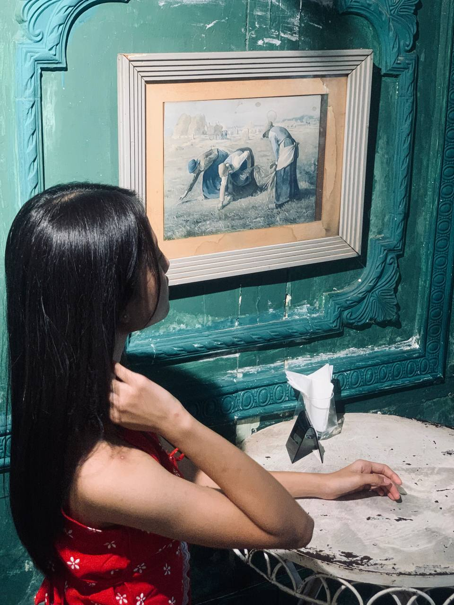

Welcome to Jerry's website
ကောင်ကင်ကြီးကို မော့ကြည့်လိုက်တဲ့အခါမှာ...
လောကကြီးမှာ ပန်းတွေအများကြီး ပွင့်နေတတ်တာ သဘာဝပါ။ အချို့ပန်းတွေက ပိုပြီး အရောင်အသွေး စုံချင်စုံမယ်၊ ပိုပြီး မွှေးပျံ့ချင် မွှေးပျံ့လိမ့်မယ်
ဒါပေမဲ့...
အေးချမ်းတဲ့ အချစ်ဆိုတာ... မုန်တိုင်းထန်နေတဲ့ ပင်လယ်ပြင်ကြီး မဟုတ်ပါဘူး
လှိုင်းလေငြိမ်သက်ပြီး ကြည်လင်နေတဲ့ ရေကန်တစ်ခုလိုပါပဲ
သူ့အနား ရောက်သွားတဲ့အခါ ကိုယ့်ရဲ့ အရိပ်ကို အတိုင်းသား မြင်ရပြီး စိတ်တွေ အေးချမ်းသွားစေတတ်ပါတယ်။

ကော်ဖီတစ်ခွက်က အချစ်အကြောင်းကို ခပ်တိုးတိုးလေး ပြောပြနေတတ်တယ်
စစချင်း ဖျော်စပ်လိုက်တဲ့အချိန်မှာ အငွေ့တထောင်းထောင်းနဲ့ အရမ်းပူပြင်းပြီး စိတ်လှုပ်ရှားစရာ ကောင်းနေလိမ့်မယ်...